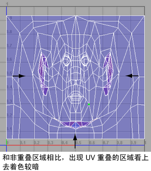

在 UV 编辑器中对其进行查看时，“对 UV 进行着色”(Shade UVs)功能可用于查看任何 UV 或 UV 壳是否重叠。激活后，所有选定 UV 壳看上去好像以半透明方式进行着色。但是，比平时显得更加不透明的区域表示重叠的区域。重叠 UV 通常是不需要的，因为任何关联的纹理贴图都将在相关的曲面网格上重叠。

在 UV 编辑器中显示重叠 UV
- 在“视口”(Viewport)中，选择要显示其 UV 壳的对象。
- 在“UV 编辑器”(UV Editor)中，执行以下操作之一：
- 按 5 键。
- 在“UV 编辑器”(UV Editor)菜单中，选择“视图 > 着色”(View > Shaded) >
 。
。
“UV 贴图着色选项”(UV Map Shading Options)窗口可用于修改默认设置。有关详细信息，请参见“UV 编辑器”(UV Editor)的“视图”(View)菜单。
- 单击位于“UV 编辑器”(UV Editor)的“视图”(View)选项栏上的“对 UV 进行着色”(Shade UVs)图标 ()。
选定的 UV 壳将更新为半透明的着色显示。通过增加 UV 或 UV 壳重叠区域的着色不透明度，可使该重叠的这些区域明显显示出来。
提示： 可以使用“展开”(Unfold)和“排布”(Layout)功能来纠正重叠 UV 和 UV 壳。有关详细信息，请参见排布 UV 壳。
还可以通过选择或，查看 UV 壳的边界。
有关详细信息，请参见“UV 编辑器”(UV Editor)的“视图”(View)菜单。